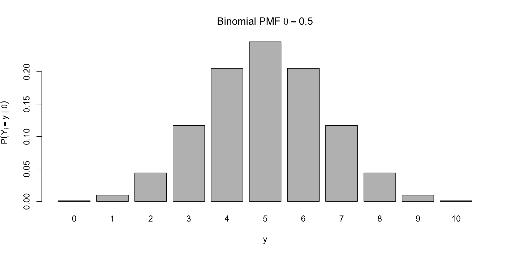
These slides have been constructed from Aki Vehatri’s Bayesian Data Analysis course at Aalto University in Espoo, Finland
The material for this course is here: https://github.com/avehtari/BDA_course_Aalto
The Bayesian paradigm is well suited [sic] for the construction of possibly optimal estimators, but is less well suited for their evaluation. Thew frequentist paradigm is complementary, as it is well suited for risk evaluations, but less well suited for construction.
Suppose we have repeated, independent observations of a binary event, such that “success” is coded as \(X_i = 1\) and a failure is coded as a \(X_i = 0\).
For each observation, we assume that \(P(X_i = 1 \mid \theta) = \theta\)
Let \(Y = \sum_{i=1}^n X_i\) denote the number of successes in \(n\) trials (what information do we lose here?)
The probability mass function corresponding to the random variable \(Y\) given a value for \(\theta\) is written: \[ p(Y = \textcolor{red}{y} \mid \theta, n) = {n \choose \textcolor{red}{y}} \theta^{\textcolor{red}{y}} (1 - \theta)^{n-\textcolor{red}{y}} \]
\[ \small p(Y = \textcolor{red}{y} \mid \theta, n) = {n \choose \textcolor{red}{y}} \theta^{\textcolor{red}{y}} (1 - \theta)^{n-\textcolor{red}{y}} \]

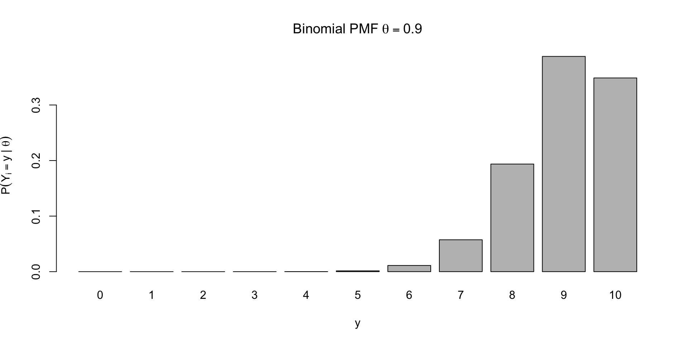
\[ \small p(Y = y \mid \textcolor{red}{\theta}, n) = {n \choose y} \textcolor{red}{\theta}^{y} (1 - \textcolor{red}{\theta})^{n-y} \]
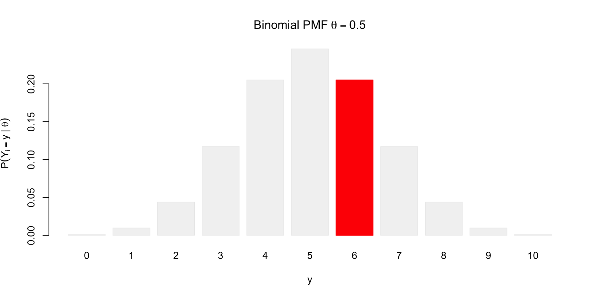
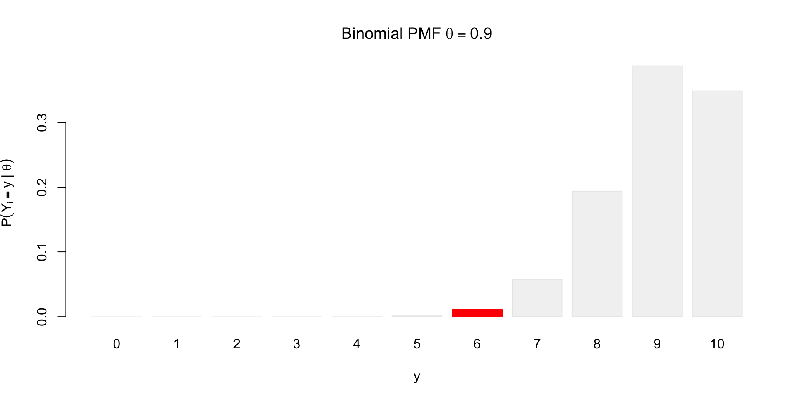
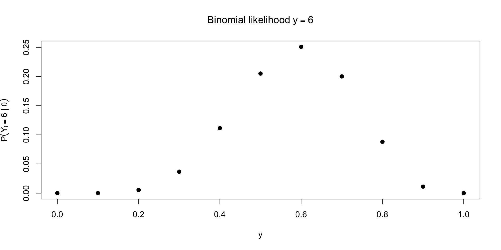
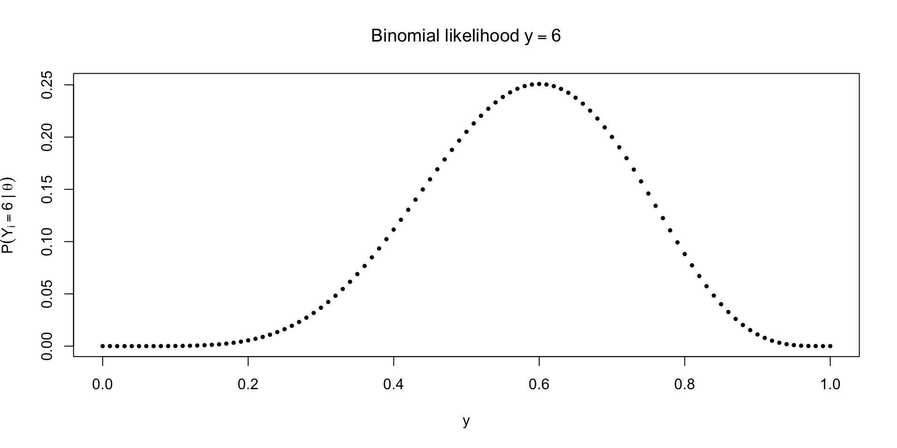
Likelihood is not a density, though it does describe uncertainty about \(\theta\)
integrate(\(theta) dbinom(6, 10, theta), 0, 1) \(\approx 0.09 \neq 1\)
Paired with a prior \(p(\theta)\) and using Bayes’ rule, we can probabilistically describe uncertainty about \(\theta\)
Note the conditioning on \(n\) below \[ p(\theta \mid y, n) = \frac{p(y \mid \theta, n)p(\theta \mid n)}{\int_0^1 p(y \mid \theta, n) p(\theta \mid n)d \theta} \]
Using the uniform prior: \(p(\theta \mid n) = \ind{0 \leq \theta \leq 1}\) gives
\[ p(\theta \mid y, n) = \frac{{n \choose y} \theta^y (1 - \theta)^{n-y}}{\int_0^1 {n \choose y} \theta^y (1 - \theta)^{n-y} d \theta} \]
Reverend Thomas Bayes’ contribution was working out the integral in the denominator
We can use some knowledge of another distribution to help us do the integration
The \(\text{Beta}(\alpha, \beta)\), \(\alpha, \beta > 0\) distribution is a distribution supported on \([0,1]\), with pdf \[ p(\theta \mid \alpha, \beta) = \frac{\Gamma(\alpha + \beta)}{\Gamma(\alpha)\Gamma(\beta)} \theta^{\alpha - 1} (1 - \theta)^{\beta - 1} \]
The Gamma function \(\Gamma(z)\) is the integral defined for positive numbers \(z\): \[ \Gamma(z) = \int_0^\infty t^{z - 1} e^{-t} dt \]
By the fact that \(\int_0^1 p(\theta \mid \alpha, \beta) d \theta = 1\) for the beta pdf, we know: \[ \frac{\Gamma(\alpha)\Gamma(\beta)}{\Gamma(\alpha + \beta)} = \int_0^1 \theta^{\alpha - 1} (1 - \theta)^{\beta - 1} d\theta \]
In this problem, the uniform prior over \(\theta\) induces a uniform prior over the marginal distribution of \(y\)
We might wonder the converse: does a uniform distribution for \(y\) imply a uniform prior over \(\theta\)?
The answer is yes, but only if we specify that it holds for every \(n\) (see Banerjee and Richardson (2013) for more details)
With a finite \(n\), there are other non-uniform priors over \(\theta\) that imply a uniform \(p(y \mid n)\)
This is a good example of examining what our prior distribution implies about the marginal distribution of our outcome
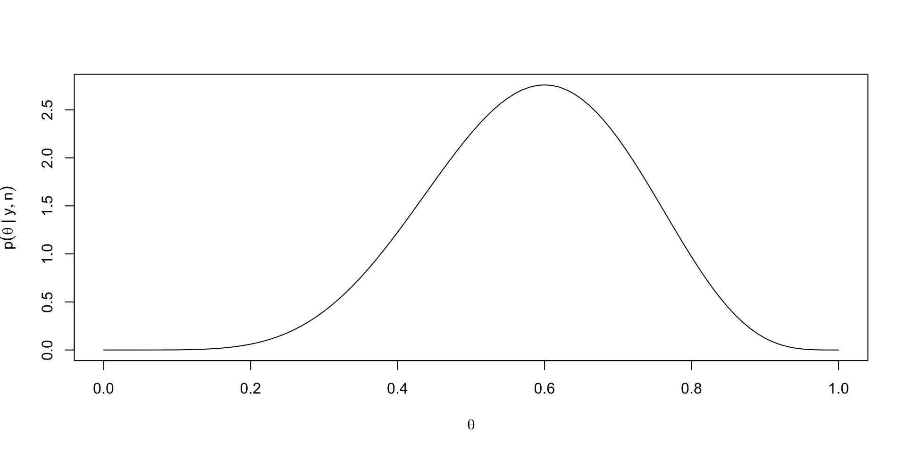
The posterior predictive distribution for a new trial when \(y = n\) or \(y = 0\) demonstrates another benefit of Bayes, which is integration
\(P(\tilde{X} = 1 \mid 0, n) = 1 / n + 2\) and \(P(\tilde{X} = 1 \mid n, n) = n + 1 / n + 2\)
Compare with the predictive distribution under the MLE, which would be \(0\) in the first case or \(1\) in the second case
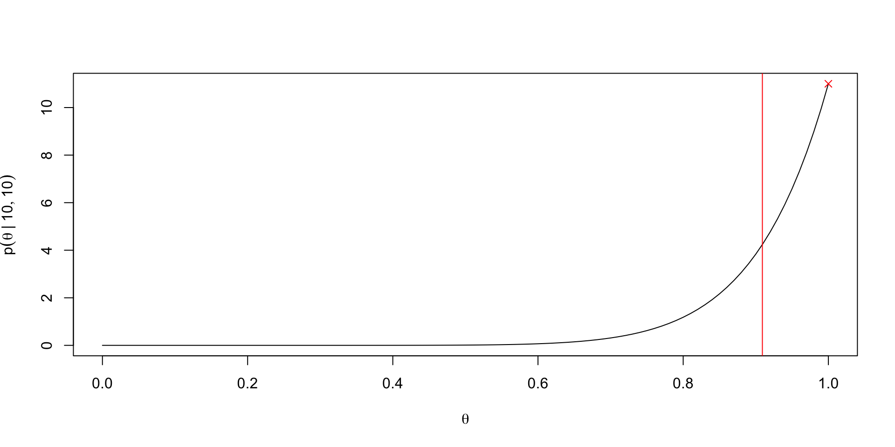
Prior predictive distribution for a new trial \[ p(\tilde{X} = 1 \mid M) = \int_0^1 p(\tilde{X} = 1 \mid \theta) p(\theta \mid M) d\theta \]
Posterior predictive distribution \[ p(\tilde{X} = 1 \mid y, n, M) = \int_0^1 p(\tilde{X} = 1 \mid \theta) p(\theta \mid y, n, M) d\theta \]
Returning to our binomial posterior we had the following: \[ p(\theta \mid y, n) = \frac{{n \choose y} \theta^y (1 - \theta)^{n - y}}{p(y \mid n)} \]
We can recognize that the numerator is the only bit that depends on \(\theta\); our posterior is a function of \(\theta\) (a special function that is positive and integrates to \(1\) over \([0,1]\))
Thus we can just as correctly write the posterior as “proportional to” instead of using an equality: \[ p(\theta \mid y, n) \propto \theta^y (1 - \theta)^{n - y} \]
If we can recognize the functional form of the RHS of the propto symbol as a density function we know, then we can immediately deduce the posterior distribution
In fact, this motivates a concept called conjugate priors, or priors that have the same functional form as the likelihoods to which they’re matched
For the binomial likelihood, the Beta prior is conjugate
\(p(\theta) \propto \theta^{\alpha - 1}(1 - \theta)^{\beta - 1}\)
When using a beta prior with arbitrary \(\alpha, \beta\), we get \(p(\theta \mid y, n) \propto \theta^{\alpha + y - 1} (1 - \theta)^{n - y + \beta - 1}\)
This normalizes to yield \(\theta \mid y, n \sim \text{Beta}(\alpha + y, n - y + \beta)\)
We get the uniform prior when \(\alpha = \beta = 1\)
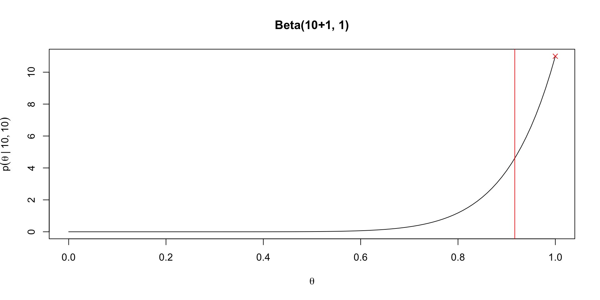
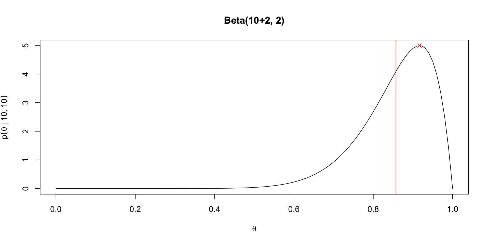
Given a posterior of \(\theta \mid y, n \sim \text{Beta}(\alpha + y, n - y + \beta)\), we get the posterior mean: \[ \Exp{\theta \mid y} = \frac{\alpha + y}{\alpha + \beta + n} \]
We can rewrite this as a convex combination of prior mean and MLE \[ \frac{\alpha + y}{\alpha + \beta + n} = \frac{\alpha}{\alpha + \beta} \frac{\alpha + \beta}{\alpha + \beta + n} + \frac{y}{n}\frac{n}{\alpha + \beta + n} \]
Clear that \(\Exp{\theta \mid y} \to \frac{y}{n}\) as \(n \to \infty\)
Variance of the posterior is (recall variance of beta is \(\frac{\Exp{\theta}(1 - \Exp{\theta})}{\alpha + \beta + 1}\): \[ \Var{\theta \mid y} = \frac{\Exp{\theta \mid y}(1 - \Exp{\theta \mid y})}{\alpha + \beta + n + 1} \]
Variance goes to zero as \(n \to \infty\)
Using the law of total variance sheds some light on what we can expect from a Bayesian analysis: \[ \Var{\theta} = \Exp{\Var{\theta \mid y}} + \Var{\Exp{\theta \mid y}} \]
This says that in expectation the posterior variance will be smaller than the prior variance
The expected change in variance is related to the variance of the posterior means over the marginal distribution of the data
In the Beta binomial example this can be worked out: \[ \begin{aligned} \Var{\Exp{\theta \mid y}} & = \Var{\theta} \frac{n}{\alpha + \beta + n} \\ \Exp{\Var{\theta \mid y}} & = \Var{\theta}(1 - \frac{n}{\alpha + \beta + n}) \end{aligned} \]
In maximum likelihood, the MLE for \(g(\theta)\) is just \(g(\hat{\theta})\), which is called invariance of the MLE (see Casella and Berger (2024) Theorem 7.2.10)
But with Bayes, we have to consider how the density changes after reparameterizing from \(\theta \to g(\theta)\), which involves keeping track of the Jacobian of the transformation
Let \(\phi = g(\theta)\), so \(\theta = g^{-1}(\phi)\) \[ \begin{aligned} \abs{\frac{d\theta}{d\phi}} = \abs{\frac{d}{d\phi} g^{-1}(\phi)} \end{aligned} \]
Suppose we have a prior \(p(\theta)\) and we want to get \(p(\phi)\). Then \[ p(\phi) = p(g^{-1}(\phi))\abs{\frac{d}{d\phi} g^{-1}(\phi)} \]
Noninformative priors in one parameterization are not noninformative in another
In our Binomial example, let \(p(\theta) = \ind{0 \leq \theta \leq 1}\) and suppose we want to reparameterize with \(\phi = \theta^2\).
Then \(\theta = \sqrt{\phi}\) the flat prior becomes \[ p(\phi) = \ind{0 \leq \sqrt{\phi} \leq 1} \frac{1}{2} \phi^{-1/2} \]
This is very much not flat; thus “no knowledge” of \(\theta\) translates to information about \(\theta^2\).
If we want \(\Exp{\theta \mid y, n} = y/n\) then we can use the following \(\text{Beta}(0,0)\) prior
\[ p(\theta) \propto \theta^{-1}(1 - \theta)^{-1} \]
This is an example of an improper prior because the integral diverges
Note however \(p(y \mid n)\) doesn’t diverge for certain \(y, n\) values: \[ p(y \mid n) = {n \choose y} \int_0^1 \theta^{y - 1} (1 - \theta)^{n - y - 1}d\theta \]
\[ \int_0^1 \theta^{y - 1} (1 - \theta)^{n - y - 1}d\theta = \frac{\Gamma(n)}{\Gamma(y)\Gamma(n - y)} \]
We need \(y > 0\) and \(n > y\) for this integral to exist
In order to use Bayes rule, we need a finite \(p(y \mid n)\)!
We’re in charge of buying scissors for the library, so we need to figure out how many pairs of left-handed scissors to buy
Suppose we run a survey to learn the proportion of OSU students who are left-handed
We randomly email \(300\) students and ask them their handedness
A 2020 meta-analysis on left-handedness gives a range of left-handedness from 9.3% to 18.1%, depending on how handedness is measured
lb <- qbinom(p = 0.01, size = 30000, prob = 0.02)/30000
ub <- qbinom(p = 0.99, size = 30000, prob = 0.35)/30000
beta_fun <- function(pars) {
alpha <- exp(pars[1])
beta <- exp(pars[2])
diff_1 <- qbeta(0.01, shape1 = alpha, shape2 = beta) - lb
diff_2 <- qbeta(0.99, shape1 = alpha, shape2 = beta) - ub
return(diff_1^2 + diff_2^2)
}lb <- qbinom(p = 0.01, size = 30000, prob = 0.02)/30000
ub <- qbinom(p = 0.99, size = 30000, prob = 0.35)/30000
beta_fun <- function(pars) {
alpha <- exp(pars[1])
beta <- exp(pars[2])
diff_1 <- qbeta(0.01, shape1 = alpha, shape2 = beta) - lb
diff_2 <- qbeta(0.99, shape1 = alpha, shape2 = beta) - ub
return(diff_1^2 + diff_2^2)
}
res <- optim(c(log(8), log(60)), beta_fun)
alpha_use <- exp(res$par[1])
beta_use <- exp(res$par[2])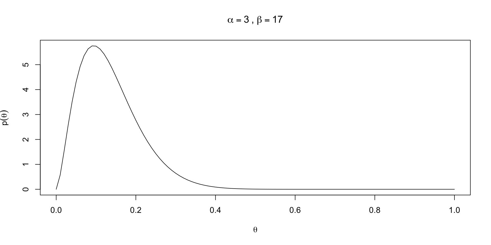
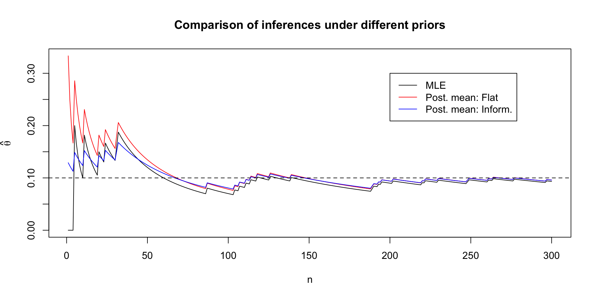
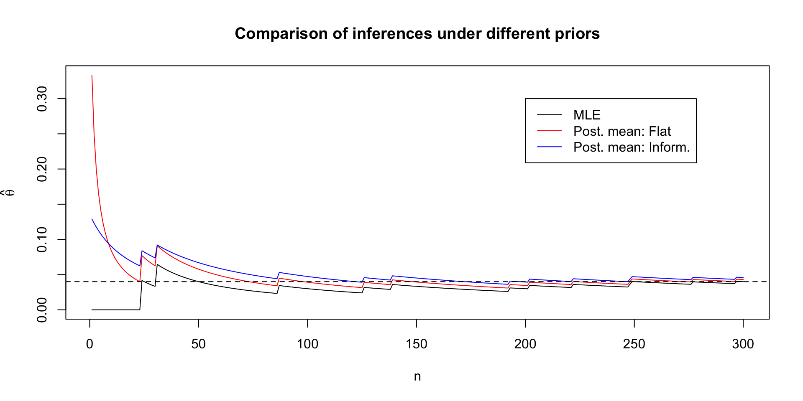
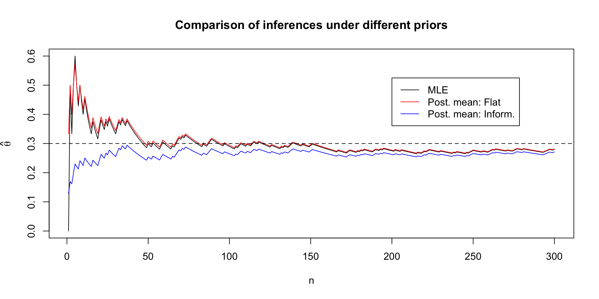
Sometimes we explicitly condition on \(M\) to indicate that our posterior for \(\theta\) is dependent on a choice of model
\[ p(\theta \mid y, n, M) = \frac{p(y \mid \theta, n, M) p(\theta \mid n, M)}{\int_0^1 p(y \mid \theta, n, M) p(\theta \mid n, M)d \theta} \]
Note that the denominator \(p(y \mid n, M) = \int_0^1 p(y \mid \theta, n, M) p(\theta \mid n, M)d \theta\)
If we have two models, we can compare marginal likelihoods: \(p(y \mid n, M_1)\) vs. \(p(y \mid n, M_2)\) (though this is computationally hard and can be sensitive to priors in way that a posterior is not)
Normal likelihoods are special for us statisticians because of the CLT (see § 5.5.3 in Casella and Berger (2024))
Comments on conjugate priors
Conjugate priors arose due to constraints on computing; if you knew the form of the posterior kernel, there was no need to compute the denominator \(\int_{\Theta} p(y \mid \theta) p(\theta) d\theta\)
Conjugate priors may be insufficiently flexible to represent prior information in certain problems
When models get larger, conjugate priors will typically not exist
With generalized MCMC algorithms, like that in Stan, there is no need to use conjugate priors